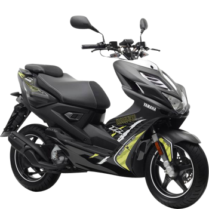

Trouve Ton Scooter
Deux roues valent mieux qu'une, tu l'auras.
Accueil
Neuf
Occasion
Mon compte
Yamaha AEROX 50cc
Caractéritiques
Description
Scooter Aerox de la marque Yamaha, le moteur tourne parfaitement. Je le cède avec le double des clés, un casque Araï en bon état et un antivol.
Cylindrée : 50
KM : 7200
Année : 2014
Prix : 500
Envoyer
